Context istoric & origini
O origine disputată, un mod de viață construit în șa
Numele „huni” apare la Ptolemeu (sec. II) și la Ammianus (c. 390), dar în locuri diferite. Legătura cu Xiongnu din China e probabilă pentru câțiva indivizi, după genetică, însă nedovedită pentru elita hunică. Despre viața lor știm mai ales din autori romani, care trebuie citiți cu grijă; arheologia confirmă arcul compozit, cazanele și mormintele de călăreți.
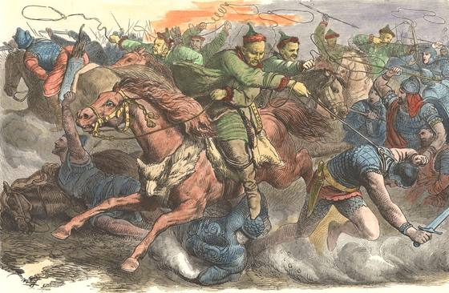
În literatura antică, cel mai vechi nume care seamănă cu „huni” apare la geograful grec Ptolemeu, care, la mijlocul secolului al II-lea d.Hr., așază o populație numită „Khounoi” între bastarni și roxolani1, în zona de stepă și pădure a Ucrainei de azi. Aproximativ 240 de ani mai târziu, Ammianus Marcellinus descrie un popor al hunilor dincolo de mlaștinile Meotide (Marea Azov), spre „oceanul înghețat”2: o localizare diferită și mult mai vagă. Identificarea celor două populații este o ipoteză modernă, comodă, dar nedemonstrată: numele se aseamănă, locurile nu coincid.
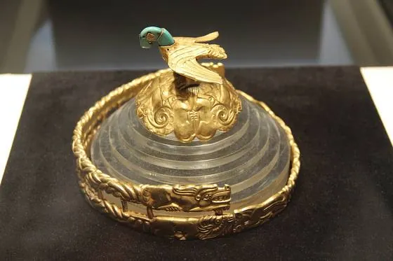
Teoria legăturii cu Xiongnu
De la mijlocul secolului al XVIII-lea3, hunii europeni au fost asociați cu Xiongnu, confederația de călăreți care a terorizat China antică și împotriva căreia s-a ridicat Marele Zid. Asemănarea celor două nume a alimentat teoria, iar o scrisoare sogdiană redactată în jurul anului 313, care descrie distrugerea orașului Luoyang din 311 de către niște „Huni”, pare, la prima vedere, să o confirme4.
Istoriografia rămâne prudentă, dar poziția s-a nuanțat mult în ultimii ani. Nu există dovadă arheologică a unei migrații compacte a Xiongnu nordici spre vest5, iar o continuitate instituțională directă între elita Xiongnu și cea hunică nu poate fi demonstrată. În schimb, studiile de paleogenetică pe morminte din Bazinul Carpatic6 au identificat, la un număr mic de indivizi, ascendență est-asiatică ce poate fi urmărită până în spațiul Xiongnu. Populația perioadei hunice din regiune rămâne însă puternic eterogenă: nu vorbim despre un bloc genetic compact, ci despre câteva linii estice într-o masă majoritar locală. Concluzia cea mai onestă azi: o legătură de populație e probabilă, o descendență directă a elitei rămâne nedovedită.
Ce spun sursele bizantine
Priscus, Procopius și Agathias converg asupra aceleiași idei: ținutul alanilor, dintre Marea Azov și Caucaz (nu Asia de Est) era considerat, în istoriografia bizantină, drept adevărata țară de origine a hunilor7.
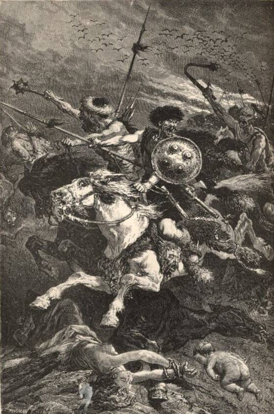
Viața nomadă și arta războiului
Ammianus Marcellinus lasă cea mai vie descriere a modului de viață hunic: un popor fără așezări fixe sau agricultură, care își petrece existența călare, se hrănește cu rădăcini sălbatice și carne înmuiată sub șa, și își poartă familiile în care acoperite8.
Atenție la sursă. Ammianus nu i-a văzut niciodată pe huni. Pasajul său reia tipare etnografice vechi (aceleași pe care Herodot le folosise, cu opt secole înainte, pentru sciți), al căror rol literar este de a marca „barbaria”, nu de a descrie fidel. Detalii celebre precum carnea înmuiată sub șa sau copiii puși pe cal înainte de a merge trebuie citite ca imagine romană despre huni, nu ca observație de teren. Arheologia confirmă în schimb elementele materiale: arcul compozit, cazanele de bronz, mormintele de călăreți.
Superioritatea lor tactică venea din două elemente: arcul recurbat compozit, construit din lemn, os și tendoane, și tragerea partă: capacitatea arcașului călare de a ochi și trage înapoi, în plină retragere. Combinate cu tactica retragerii false, care atrăgea inamicul într-o urmărire dezordonată, aceste elemente transformau fiecare ciocnire într-o ambuscadă potențială.
Socotind că nu se cuvine să coboare de pe cai, barbarii au ținut sfatul călare; iar romanii, ca să nu se arate mai prejos, au vorbit și ei tot din șa.
Izvoarele, față în față
Tot ce știm despre huni vine din cinci tipuri de surse. Niciuna nu e completă: un martor ocular are interesele lui, un rezumat târziu poate păstra surse pierdute, iar un obiect arată ce a existat, dar nu cine l-a folosit.
Contemporan, dar nu i-a văzut pe huni
Ce aflămCea mai veche descriere amănunțită a hunilor și a șocului din 375–378.
LimiteFolosește tipare vechi despre „barbari”: imaginea e literară, nu observație de teren.
Martor ocular: în solia din 449
Ce aflămCurtea lui Attila văzută din interior: ospățul, diplomația, tributul.
LimiteAvem doar fragmente copiate de alții; privește lumea hunică cu ochi de diplomat bizantin.
Nu a fost martor; rezumă autori mai vechi
Ce aflămCâmpiile Catalaunice, moartea lui Attila, bătălia de la Nedao.
LimiteScrie o istorie a goților, la un secol distanță, și are interesul să-i pună în lumină.
Obiecte din epocă
Ce aflămCe purtau, ce foloseau și cât de departe ajungea moda elitelor din lumea hunică.
LimiteObiectele nu spun etnia: aceeași diademă putea fi purtată de un hun, un got sau un alan.
Analiză modernă pe schelete din epocă
Ce aflămO populație amestecată: câteva linii est-asiatice într-o masă majoritar locală.
LimiteEșantioane mici, mai ales din morminte de elită; ADN-ul nu arată identitatea asumată.
Distanța e socotită față de evenimentele descrise (375–378 pentru Ammianus, 451–454 pentru Iordanes). Edițiile și studiile sunt în bibliografia de la final.
Cronologie interactivă
Trage de-a lungul liniei sau apasă pe o epocă. Harta arată unde s-a petrecut fiecare eveniment și până unde ajunseseră hunii în acel an; alături afli ce s-a întâmplat. Poți apăsa și direct pe punctele de pe hartă.
Surse pentru evenimentele din cronologie: moartea lui Ermanaric9, trecerea Dunării de către vizigoți10, Câmpiile Catalaunice și solia la curtea lui Attila11.
Marea Migrație
Harta dinamică: apasă pe o săgeată pentru a urmări presiunea hunică
Din 375, hunii împing popoarele unele în altele și spre granițele Romei: un „efect de domino” pe care unii istorici îl contestă. Hunii se așază în Câmpia Panonică, lovesc Balcanii (441–447) și primesc un tribut care ajunge la 2.100 de livre de aur pe an, apoi atacă Galia (451) și Italia (452).
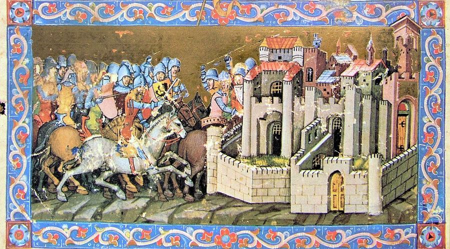
Șocul de la 375 nu s-a oprit la alani și ostrogoți. Popoarele împinse de huni s-au izbit unele de altele și, în cele din urmă, de granițele Romei: un efect de domino pe care o parte a istoriografiei moderne îl numește Marea Migrație a Popoarelor12. Explicația nu e însă unanimă: istorici precum Guy Halsall și Walter Goffart o contestă, argumentând că slăbiciunile interne ale Imperiului au contat cel puțin la fel de mult ca presiunea venită din stepă.
Granița de pe Dunăre și Rin, limes-ul roman, nu mai putea fi închisă. După dezastrul de la Adrianopol (378), împăratul Teodosie I îi așază pe goți în Imperiu, în 382, ca foederati: aliați legați printr-un tratat, care primeau pământ și luptau pentru Roma sub propriii conducători.
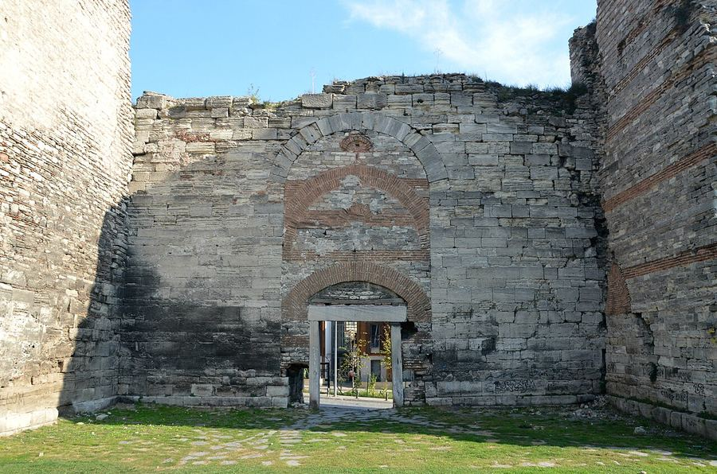
Mecanismul efectului de domino
Presiunea nu venea dintr-un singur punct, ci din trei direcții succesive ale expansiunii hunice înseși:
- Spre Bazinul Carpatic: hunii nu doar împing popoare, ci se și așază: din anii 420–430, centrul lor de putere se mută în Câmpia Panonică, la nord de Dunăre, de unde controlează un areal ce înglobează foste teritorii germanice și sarmatice.
- Spre Balcani, împotriva Răsăritului: campaniile din 441–447 lovesc direct Imperiul Roman de Răsărit, devastând provinciile dunărene până aproape de zidurile Constantinopolului și impunând tributul care avea să ajungă la 2.100 de livre de aur.
- Spre Apus, în 451–452: marea campanie a lui Attila în Galia (oprită la Câmpiile Catalaunice) și invazia Italiei din anul următor, ultimele două lovituri directe date de huni Imperiului, înainte de prăbușirea rapidă a hegemoniei lor.
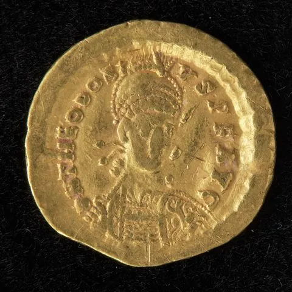
De ce plătea Constantinopolul aur?
Un popor fără orașe și fără monede proprii a primit, an de an, sute de kilograme de aur de la Imperiul Roman de Răsărit. Urmărește anii de mai sus ca să vezi cum a crescut prețul păcii.
c. 422–430
350 de livre pe an
Sub regele Rua, hunii primesc 350 de livre de aur în fiecare an. Pentru Constantinopol, e prețul liniștii la Dunăre.
c. 435
Dublu: 700 de livre
La Margus, Attila și Bleda obțin dublarea tributului și deschiderea târgurilor de la graniță.
443 sau 447
Triplu: 2.100 de livre, plus 6.000 restanță
După două campanii în Balcani, tributul se triplează. Restanța trebuie plătită pe loc: senatorii își vând mobila și bijuteriile soțiilor, scrie Priscus.
în fiecare an
Peste 151.000 de monede
O livră romană avea 72 de solizi. Cele 2.100 de livre însemnau 151.200 de monede de aur, adică aproape 690 kg de aur pe an.
450
Plata se oprește
Noul împărat, Marcian, refuză tributul. Attila nu se mai întoarce spre Balcani: în 451 pornește spre Galia. Aurul a cumpărat timp pentru Răsărit, iar nota de plată a ajuns în Apus.
Cifrele: Priscus din Panium, fragmentele 2 și 9.3 (ed. R. C. Blockley, 1983). Greutatea: livra romană ≈ 327 g.
Orașul care a cucerit lumea întreagă a fost cucerit el însuși.
375–410 d.Hr.
Vizigoții
Presați de huni, vizigoții trec Dunărea în 376 și cer azil roman. Tratați prost de administrația locală, se răscoală și zdrobesc o armată romană la Adrianopol (378), unde moare însuși împăratul Valens. În 410, sub Alaric, jefuiesc Roma, apoi se așază în Galia și Hispania.
4 trasee pe hartă · click, atingere sau Tab + Enter pentru detalii
Joacă „Attila și Marea Migrație”: popoarele se mișcă după deciziile tale →Surse pentru traseele de pe hartă: trecerea Dunării de către vizigoți13 și traversarea Rinului de către vandali, alani și suebi14.
Atlasul migrației hunice
De la Volga până în Galia, 370–455 d.Hr. Trage cronologia: traseele se desenează an cu an, iar zona colorată arată cât de departe ajunsese puterea hunilor. Apasă pe orice oraș sau bătălie pentru sursa istorică.
← glisează harta →
Hartă de bază: Europe relief laea location map, Alexrk2, Wikimedia Commons, CC BY-SA 3.0. Traseele, zonele și marcajele sunt adăugate peste ea.
Personalități & impact
Attila și Aetius: două fețe ale aceluiași conflict
Attila și Aetius, generalul care îl oprește la Câmpiile Catalaunice (451), mor la un an unul după altul (453 și 454). După bătălia de la Nedao, puterea hunică se destramă, iar în 476 cade Imperiul de Apus. Pe teritoriul României, epoca a lăsat tezaurele de la Pietroasa și Șimleul Silvaniei și diadema de la Gherăseni.
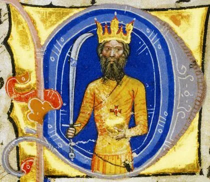
Regele hunilor
Attila
„Flagellum Dei”, Biciul lui Dumnezeu15
- Conduce imperiul hunic singur din 445 d.Hr., după înlăturarea fratelui său, Bleda.
- Devastează Balcanii (441–447) și obține tribut anual uriaș de la Constantinopol.
- Invadează Galia (451) și Italia (452); moare în 453, în noaptea nunții cu Ildico.
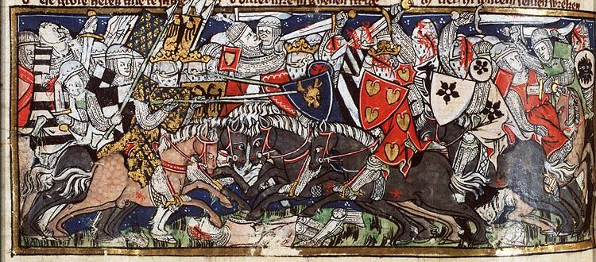
Generalul roman
Flavius Aetius
„Ultimul dintre romani”16
- În tinerețe, ostatic la curtea hunilor: cunoștea lumea hunică din interior, un avantaj rar printre romanii vremii.
- Formează, în 451, coaliția care îl oprește pe Attila la Câmpiile Catalaunice: nu doar romani și vizigoți, ci și franci, burgunzi și alani.
- Este ucis chiar de împăratul Valentinian III, în 454, la trei ani după victoria sa cea mai mare.
viața domnia lui Attila (434–453)
O luptă cumplită, schimbătoare, crudă și îndârjită, cum n-a mai povestit nimeni din vechime.
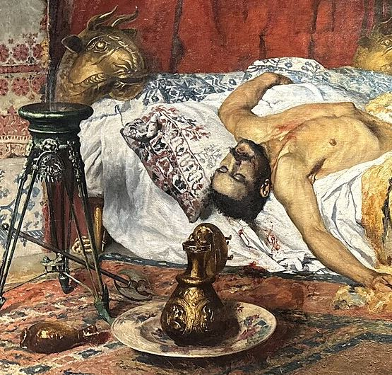
Ironia istorică e completă: la Câmpiile Catalaunice, ostrogoții, vasali ai lui Attila, au luptat de partea hunilor, în timp ce vizigoții, cei dintâi fugari din calea acestora, s-au aliat cu Roma pentru a-i opri17. Doi ani mai târziu, moartea lui Attila (453) și bătălia de la Nedao (c. 454), în care popoarele subjugate se răscoală și destramă hegemonia hunică, pun capăt apogeului puterii hunice în Europa, deși nu instantaneu: Dengizich, unul dintre fiii lui Attila, mai luptă cu Bizanțul până în 46918.
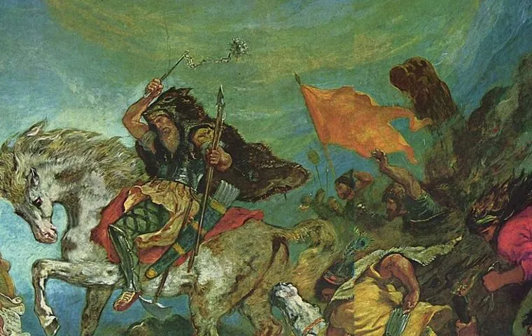
Consecințe de lungă durată
476 d.Hr.
La doar 23 de ani după moartea lui Attila, ultimul împărat al Romei de Apus este detronat: data convențională a căderii Imperiului Roman de Apus.
493 d.Hr.
Ostrogoții, eliberați de sub tutela hunică, întemeiază sub Teodoric cel Mare un regat propriu în Italia.
c. 500 d.Hr.
Vandalii în Africa de Nord, vizigoții în Hispania, francii în ascensiune în Galia; harta etnică a Europei occidentale e complet redesenată.
Peste secole
Marea Migrație marchează, pentru istoriografia modernă, tranziția simbolică de la Antichitate la Evul Mediu timpuriu.
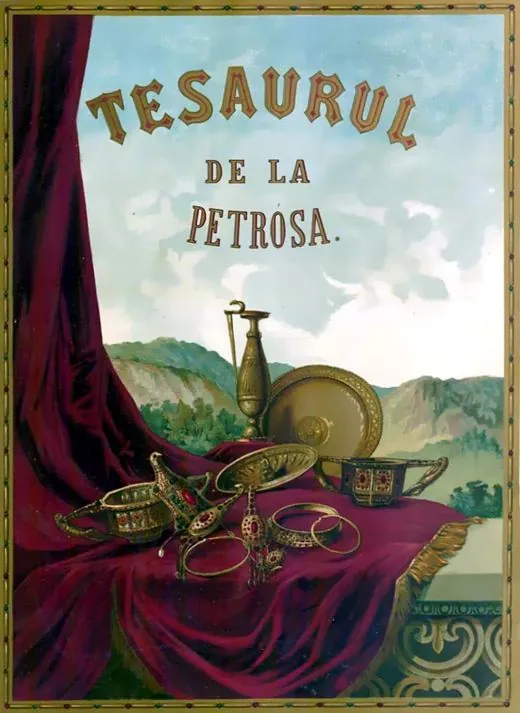
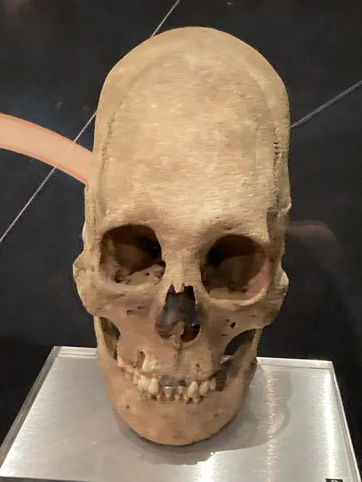
Ecoul în spațiul carpato-danubiano-pontic
Pentru teritoriul de azi al României, secolul al V-lea nu e o notă de subsol a istoriei hunice, ci chiar scena ei. Dunărea era granița Imperiului, iar Dacia Ripensis și Moesia se aflau exact pe direcția campaniilor hunice: în 408, hunii conduși de Uldin cuceresc Castra Martis, în Dacia Ripensis19, iar campaniile din 441–447 lovesc Viminacium, pe Dunăre, și Naissus, în interior.
Urmele materiale sunt la fel de concrete. Aur roman ajuns dincolo de graniță a fost descoperit la Dolhești (Moldova), iar la Șimleul Silvaniei (Transilvania) au apărut două tezaure spectaculoase, alcătuite în principal din medalioane imperiale de aur și podoabe, atribuite de obicei unei elite germanice (probabil gepide) din secolele IV–V20. Cazane hunice de bronz au fost semnalate și pe teritoriul României21: aceleași obiecte de cult și prestigiu ca în Bazinul Carpatic. Cea mai celebră piesă a epocii, tezaurul de la Pietroasa („Cloșca cu puii de aur”), este un tezaur gotic, nu hunic22: tocmai de aceea e relevant aici, fiindcă a fost probabil îngropat de o elită germanică sub presiunea evenimentelor declanșate de sosirea hunilor.
Cea mai grăitoare piesă descoperită pe teritoriul României este însă diadema de la Gherăseni (județul Buzău), expusă și explorabilă în detaliu în modulul Muzeul virtual al acestui site. Găsită în 1965 la Grindul Cremenea, într-un mormânt de înhumație din prima jumătate a secolului al V-lea, e lucrată pe un miez de bronz acoperit cu foiță de aur și împodobită cu almandine montate à cabochon, în stilul policrom al epocii. Analiza antropologică a arătat că scheletul aparținea unei femei cu craniul deformat artificial, aceeași practică de elită despre care vorbesc izvoarele. Piesa face parte din patrimoniul Muzeului Județean Buzău și se înscrie într-o serie de circa 25 de diademe asemănătoare, descoperite pe un areal imens, din Kazahstanul de azi până în Europa Centrală23.
O precizare necesară. Prezența unor obiecte „hunice” într-un mormânt nu dovedește că cel îngropat era hun. În secolul al V-lea, stilul policrom cu granate, cazanele de bronz și chiar deformarea craniană circulau între popoare ca modă a elitelor. Ele arată apartenența la o lume politică dominată de huni, nu neapărat originea etnică a purtătorului, iar „prințesa” de la Gherăseni e un exemplu bun tocmai fiindcă originea ei etnică rămâne deschisă.
Muzeul Hunilor
Opt artefacte din epoca hunilor, în fotografii reale din colecții muzeale.
Apasă pe punctele roșii de pe fotografii ca să afli detaliile fiecărei piese.